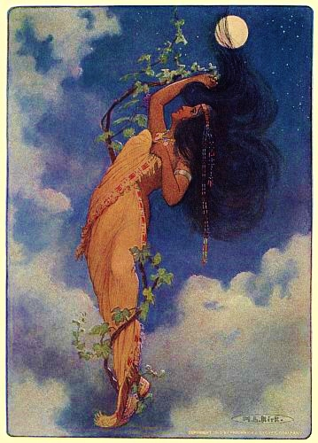

The Indigenous peoples of the Americas comprise numerous different cultures. Each has its own mythologies, many of which share certain themes across cultural boundaries. In North American mythologies, common themes include a close relation to nature and animals as well as belief in a Great Spirit that is conceived of in various ways. As anthropologists note, their great creation myths and sacred oral tradition in whole are comparable to the Christian Bible and scriptures of other major religions.
There is no single mythology of the Native Americans in the United States, the Indigenous peoples in Canada and other peoples, but numerous different canons of traditional narratives associated with religion, ethics and beliefs. Such stories are deeply based in Nature and are rich with the symbolism of seasons, weather, plants, animals, earth, water, fire, sky, and the heavenly bodies. Common elements are the principle of an all-embracing, universal and omniscient Great Spirit, a connection to the Earth and its landscapes, a belief in a parallel world in the sky (sometimes also underground and/or below the water), diverse creation narratives, visits to the 'land of the dead', and collective memories of ancient sacred ancestors. A characteristic of many of the myths is the close relationship between human beings and animals (including birds and reptiles). They often feature shape-shifting between animal and the human form. Marriage between people and different species (particularly bears) is a common theme. In some stories, animals foster human children. Although most Native North American myths are profound and serious, some use light-hearted humor, often in the form of tricksters, to entertain, as they subtly convey important spiritual and moral messages. The use of allegory is common, exploring issues ranging from love and friendship to domestic violence and mental illness. Some myths are connected to traditional religious rituals involving dance, music, songs, and trance (e.g. the sun dance). Most of the myths from this region were first transcribed by ethnologists during the late 19th and early 20th centuries. These sources were collected from Native American elders who still had strong connections to the traditions of their ancestors. They may be considered the most authentic surviving records of the ancient stories, and thus form the basis of the descriptions below.
Myths from this region feature female deities, such as the creator, Big Turtle; and First Mother, from whose body grew the first corn and tobacco. The two great divine culture heroes are Glooskap and Manabus. Other stories explore the complex relationships between animals and human beings. Some myths were originally recited as verse narratives.
Stories unique to the Great Plains feature buffalo, which provided the Plains peoples with food, clothing, housing and utensils. In some myths they are benign, in others fearsome and malevolent. The Sun is an important deity; other supernatural characters include Morning Star and the Thunderbirds. A common theme is the making of a journey, often to a supernatural place across the landscape or up to the parallel world in the sky. One of the most dominant trickster stories of the Plains is Old Man, about whom numerous humorous stories are told. The Old Man, known as Waziya, lived beneath the earth with his wife, and they had a daughter. Their daughter married the wind and had four sons: North, East, South, and West. The sun, moon and winds then ruled the universe together. An important supernatural hero is the Blood Clot Boy, transformed from a clot of blood.
Important myths of this region deal with the origin of hunting and farming, and the origin of sickness and medicine. An important practice of this region was animism, the belief that all objects, places, and creatures have a soul. Most death, disease, or misfortune would be associated with the failure to put the soul of a slain animal to rest. When this happens, the animal could get vengeance through their "species chief". Large amounts of rare materials found with this regions dead suggest strong evidence that they believed in a sort of afterlife. It is thought that when a member of a tribe died, their soul would hover over their communities, trying to get their friends and relatives to join them, so their funeral ceremonies were not just to commemorate the dead, but to protect the living. The Green Corn ceremony, also known as Busk, was an annual celebration of a successful corn crop. Their fires were put out and rekindled, grudges are forgiven, and materials are thrown out or broken to then be replaced. It was essentially a renewing of life and community for these tribes.
Taíno mythology; This mythology and philosophy expresses the spiritual beliefs of the maritime Maipurean island settlers from the Amazon and/or Arawakan group of peoples. Their lineage and mythologies include having a creator deity as well as endless cyclical spontaneous birth. Immigrating from North East South America, their stories include gods and deity veneration as well as a view beyond that. Some of the philosophies include a concept of reality as illusion; and also that this world is a dream. Some petroglyphs on the islands include references interpreted to suggest galactic or alien life. Today's members of the community have established several views of mythology; some indicating ancestor veneration while others focus on deity and spirit veneration. The belief sets indicate the lineage rather than pointing to one absolute truth. A commonality between lineages includes honoring ancestors through cemi/zemi stones; spiritual homes of the lineage, as well as respecting sun and moon spirits. Weather spirits and spirits of the honored dead are also respectfully acknowledged.
Myths of this region are dominated by the sacred creator/trickster Coyote. Other significant characters include the Sun People, the Star Women and Darkness. A few of the most distinctive ceremonies of this region were their funeral customs and their commemoration of the dead. When a death occurred, the house in which it happened would be burnt down, and there would sometimes be bans on speaking the name of the dead. Widows would be smeared with pitch and their hair would be cut until the annual mourning releases them. This mourning came to be known as the "burning", the "cry", or the "dance of the dead". During these ceremonies, multiple properties are burned while the tribe dances, chants, and wails, in order to appease the ghosts. Another common ceremony is one that takes place when adolescents hit puberty. Girls go through a series of grueling tabus when her first period starts but is followed by a celebratory dance when it ends. Boys will undergo an official initiation into the tribe by participating in ceremonies that recount the tribes' mysteries and myths.
Myths of the Navajo, Apache, and Pueblo peoples tell how the first human beings emerged from an underworld to the Earth. According to the Hopi Pueblo people, the first beings were the Sun, two goddesses known as Hard Being Woman (Huruing Wuhti) and Spider Woman. It was the goddesses who created living creatures and human beings. Other themes include the origin of tobacco and corn, and horses; and a battle between summer and winter. Some stories describe parallel worlds in the sky and underwater. These peoples went on to kill each other due to Zuni tales. Multi-sensory experiences also are prominent in Ancestral Pueblo ceremonial rituals; for example, to evoke a paradisiacal realm, Chacoan people would perform sensorial ceremonies by use of exotic artifacts such as turquoise, shell, cacao, copper bells, and macaws.